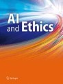

ALA 2022
9 & 10 May 2022, Auckland, NZ
News
- 11 Apr 2022: We are also excited to announce Patrick MacAlpine of Sony AI will be giving a talk/demo on Sony AI's recent paper "Outracing Champion Gran Turismo Drivers with Deep Reinforcement Learning".
- 11 Apr 2022: We are excited to announce Bei Peng as a keynote speaker for ALA 2022.
- 16 Feb 2022: We are excited to announce Natasha Jaques as a keynote speaker for ALA 2022.
- 01 Feb 2022: ALA-Cogment Challenge goes live!
- 28 Jan 2022: ALA 2022 submission deadline has been extended to 11 Feb 2022 23:59 UTC
- 6 Dec 2021: ALA 2022 Call for papers can be found here
- 25 Nov 2021: ALA 2022 Website goes live!
ALA 2022 - Workshop at AAMAS 2022
Adaptive and Learning Agents (ALA) encompasses diverse fields such as Computer Science, Software Engineering, Biology, as well as Cognitive and Social Sciences. The ALA workshop will focus on agents and multiagent systems which employ learning or adaptation.
This workshop is a continuation of the long running AAMAS series of workshops on adaptive agents, now in its fourteenth year. Previous editions of this workshop may be found at the following urls:
- ALA-21
- ALA-20
- ALA-19
- ALA-18
- ALA-17
- ALA-16
- ALA-15
- ALA-14
- ALA-13
- ALA-12
- ALA-11
- ALA-10
- ALA-09
- ALAMAS+ALAg-08
- ALAg-07
- Earlier editions
The goal of this workshop is to increase awareness of and interest in adaptive agent research, encourage collaboration and give a representative overview of current research in the area of adaptive and learning agents and multi-agent systems. It aims at bringing together not only scientists from different areas of computer science (e.g. agent architectures, reinforcement learning, evolutionary algorithms) but also from different fields studying similar concepts (e.g. game theory, bio-inspired control, mechanism design).
The workshop will serve as an inclusive forum for the discussion of ongoing or completed work covering both theoretical and practical aspects of adaptive and learning agents and multi-agent systems.
This workshop will focus on all aspects of adaptive and learning agents and multi-agent systems with a particular amphasis on how to modify established learning techniques and/or create new learning paradigms to address the many challenges presented by complex real-world problems. The topics of interest include but are not limited to:
- Novel combinations of reinforcement and supervised learning approaches
- Integrated learning approaches that work with other agent reasoning modules like negotiation, trust models, coordination, etc.
- Supervised multi-agent learning
- Reinforcement learning (single- and multi-agent)
- Novel deep learning approaches for adaptive single- and multi-agent systems
- Multi-objective optimisation in single- and multi-agent systems
- Planning (single- and multi-agent)
- Reasoning (single- and multi-agent)
- Distributed learning
- Adaptation and learning in dynamic environments
- Evolution of agents in complex environments
- Co-evolution of agents in a multi-agent setting
- Cooperative exploration and learning to cooperate and collaborate
- Learning trust and reputation
- Communication restrictions and their impact on multi-agent coordination
- Design of reward structure and fitness measures for coordination
- Scaling learning techniques to large systems of learning and adaptive agents
- Emergent behaviour in adaptive multi-agent systems
- Game theoretical analysis of adaptive multi-agent systems
- Neuro-control in multi-agent systems
- Bio-inspired multi-agent systems
- Applications of adaptive and learning agents and multi-agent systems to real world complex systems
Extended and revised versions of papers presented at the workshop will be eligible for inclusion in a journal special issue (see below).
Important Dates
Submission Details
Papers can be submitted through EasyChair.
We invite submission of original work, up to 8 pages in length (excluding references) in the ACM proceedings format (i.e. following the AAMAS formatting instructions). This includes work that has been accepted as a poster/extended abstract at AAMAS 2022. Additionally, we welcome submission of preliminary results, i.e. work-in-progress, as well as visionary outlook papers that lay out directions for future research in a specific area, both up to 6 pages in length, although shorter papers are very much welcome, and will not be judged differently. Finally, we also accept recently published journal papers in the form of a 2 page abstract.
Furthermore, for submissions that were rejected or accepted as extended abstracts at AAMAS, we encourage authors to also append the received reviews. This is simply a recommendation and it is optional. Authors can also include a short note or changelist they carried out on the paper. The reviews can be appended at the end of the submission file and do not count towards the page limit.
All submissions will be peer-reviewed (single-blind). Accepted work will be allocated time for poster and possibly oral presentation during the workshop. Extended versions of original papers presented at the workshop will also be eligible for inclusion in a post-proceedings journal special issue.
When preparing your submission for ALA 2022, please be sure to remove the AAMAS copyright block, citation information and running headers. Please replace the AAMAS copyright block in the main.tex file from the AAMAS template with the following:
\setcopyright{none}
\acmConference[ALA '22]{Proc.\@ of the Adaptive and Learning Agents Workshop (ALA 2022)}
{May 9-10, 2022}{Online, \url{https://ala2022.github.io/}}{Cruz, Hayes, da Silva, Santos (eds.)}
\copyrightyear{2022}
\acmYear{2022}
\acmDOI{}
\acmPrice{}
\acmISBN{}
\settopmatter{printacmref=false}
ALA-Cogment Challenge
All accepted ALA papers will be eligable to take part in the ALA-Cogment Challenge. The ALA-Cogment Challenge offers a total prize pool of $10,000.
Cogment is an open-source framework for distributed multi-actor training, deployment, and operations. To take part in the competition you must submit a paper to ALA by 11-Feb-2022. Then all accepted ALA particiapants must, by April 30, 2022:
- Sign up for the ALA-Cogment Challenge.
- Cite Cogment in your paper.
- Implement an experimental setup using Cogment for your submitted paper and share it with the ALA-Cogment Challenge evaluation team (e.g. in a GitHub repo or in a zip file). We strongly encourage authors to publish their code to meet this requirement.
We will award up to three grand prizes to ALA-Cogment Challenge submissions that make the best use of Cogment for applications or for fundamental research. Grand prizes will be awarded according to criteria that include (but are not limited to):
- The richness of the submission’s Cogment usage with respect to agents, implementations, environments, benchmarking, and evaluations.
- The creative involvement of human actors or evaluators during the submission’s Cogment training or validation process.
- The complexity of the AI problem being addressed with Cogment.
Journal Special Issue
We are delighted to announce that extended versions of all original contributions at ALA 2022 will be eligible for inclusion in a special issue of the Springer journal Neural Computing and Applications (Impact Factor 5.606). The deadline for submitting extended papers will be 15 September 2022.

We will post further details about the submission process and expected publication timeline here after the workshop.
Program
TBA
Accepted Papers
TBA
Invited Talks
Natasha Jaques
Affiliation: Google Brain & UC Berkeley
Website: https://natashajaques.ai
Bio: Natasha Jaques holds a joint position as a Senior Research Scientist at Google Brain and Visiting Postdoctoral Scholar at UC Berkeley. Her research focuses on Social Reinforcement Learning in multi-agent and human-AI interactions. Natasha completed her PhD at MIT, where her thesis received the Outstanding PhD Dissertation Award from the Association for the Advancement of Affective Computing. Her work has also received Best Demo at NeurIPS, an honourable mention for Best Paper at ICML, Best of Collection in the IEEE Transactions on Affective Computing, and Best Paper at the NeurIPS workshops on ML for Healthcare and Cooperative AI. She has interned at DeepMind, Google Brain, and was an OpenAI Scholars mentor. Her work has been featured in Science Magazine, Quartz, IEEE Spectrum, MIT Technology Review, Boston Magazine, and on CBC radio. Natasha earned her Masters degree from the University of British Columbia, and undergraduate degrees in Computer Science and Psychology from the University of Regina. More about Natasha, but more importantly her research, can be found on her website: https://natashajaques.ai
Bei Peng

Affiliation: University of Liverpool
Website: https://beipeng.github.io/
Bio: Bei Peng is currently a Lecturer (Assistant Professor) in the Department of Computer Science at the University of Liverpool. Her research focuses mainly on deep reinforcement learning, multi-agent systems, interactive machine learning, and curriculum learning. Prior to Liverpool, Bei was a Postdoctoral Researcher in reinforcement learning at the Whiteson Research Lab at the University of Oxford, and a Non-Stipendiary Lecturer in Computer Science at St Catherine's College. Bei received a B.S. in Computer Science from the Huazhong University of Science and Technology in China in 2012 and a Ph.D. in Computer Science from the Washington State University in 2018.
Patrick MacAlpine
Affiliation: Sony AI
Bio: Patrick MacAlpine is a research scientist at Sony AI, and his research spans the areas of autonomous multiagent systems, robotics, and machine learning with an emphasis on reinforcement learning. He completed a Ph.D. in the computer science department at the University of Texas at Austin where he was advised by Peter Stone. During his Ph.D. Patrick served as the team leader of the robot soccer UT Austin Villa RoboCup 3D Simulation League team, and much of his dissertation work contributed to the team winning the RoboCup 3D Simulation League world championship multiple years. Patrick received both bachelor’s and master’s degrees in electrical engineering from Rice University. Prior to joining Sony AI, Patrick was a postdoctoral researcher in the reinforcement learning group at Microsoft Research.
Title: Outracing Champion Gran Turismo Drivers with Deep Reinforcement Learning
Abstract: Many potential applications of artificial intelligence involve making real-time decisions in physical systems while interacting with humans. Automobile racing represents an extreme example of these conditions; drivers must execute complex tactical manoeuvres to pass or block opponents while operating their vehicles at their traction limits. Racing simulations, such as the PlayStation game Gran Turismo, faithfully reproduce the non-linear control challenges of real race cars while also encapsulating the complex multi-agent interactions. Here we describe how we trained agents for Gran Turismo that can compete with the world’s best e-sports drivers. We combine state-of-the-art, model-free, deep reinforcement learning algorithms with mixed-scenario training to learn an integrated control policy that combines exceptional speed with impressive tactics. In addition, we construct a reward function that enables the agent to be competitive while adhering to racing’s important, but under-specified, sportsmanship rules. We demonstrate the capabilities of our agent, Gran Turismo Sophy, by winning a head-to-head competition against four of the world’s best Gran Turismo drivers. By describing how we trained championship-level racers, we demonstrate the possibilities and challenges of using these techniques to control complex dynamical systems in domains where agents must respect imprecisely defined human norms.
Programe Committee
- Erman Acar, Leiden University & VU Amsterdam, NL
- Adrian Agogino, University of California Santa Cruz, USA
- Nicolas Anastassacos, University College London, UK
- Raphael Avalos, Vrije Universiteit Brussel, BE
- Angel Ayala, Universidade de Pernambuco, BR
- Wolfram Barfuss, Tuebingen AI Center, University of Tuebingen, GE
- Pablo Barros, University of Hamburg, GE
- Daan Bloembergen, City of Amsterdam, NL
- Rodrigo Bonini, Federal University of ABC, BR
- Roland Bouffanais, University of Ottawa, CA
- Mustafa Mert Çelikok, Aalto University, FI
- Filippos Christianos, University of Edinburgh, UK
- Raphael Cobe, Sao Paulo State University, BR
- Vinicius Renan de Carvalho, University of São Paulo, BR
- Yunshu Du, Sony AI, US
- Elias Fernández Domingos, Vrije Universiteit Brussels, BE
- Marek Grzes, University of Kent, BE
- Brent Harrison, University of Kentucky, US
- Fredrik Heintz, Linköping University, SE
- Daniel Hernandez, University of York, UK
- Johan Källström, Linköping University, SE
- Thommen Karimpanal George, Deakin University, AU
- Sammie Katt, Northeastern University, US
- Mari Kawakatsu, Princeton University, US
- Matt Knudson, NASA, US
- Mikel Landajuela, Lawrence Livermore National Laboratory, US
- Guangliang Li, Ocean University of China, CN
- Pieter Libin, Vrije Universiteit Brussel, BE
- Udari Madhushani, Princeton University, US
- Kleanthis Malialis, University of Cyprus, CY
- Karl Mason, Georgia Institute of Technology, US
- Cristian Camilo Millán Arias, Universidade de Pernambuco, BR
- Nicolás Navarro-Guerrero, Deutsches Forschungszentrum für Künstliche Intelligenz, GE
- Bei Peng, University of Liverpool, UK
- Hélène Plisnier, Vrije Universiteit Brussel, BE
- Canmanie Ponnambalam, Delft University of Technology, NL
- Roxana Radulescu, Vrije Universiteit Brussel, BE
- Pablo Hernandez-Leal, Borealis AI, CA
- Gabriel De O. Ramos, Universidade do Vale do Rio dos Sinos, BR
- Diederik M. Roijers, Vrije Universiteit Brussel & HU University of Applied Sciences Utrecht, NL
- Willem Röpke, Vrije Universiteit Brussel, BE
- Francisco C. Santos, INESC-ID and Instituto Superior Técnico, Universidade de Lisboa, PT
- Craig Sherstan, University of Alberta, CA
- Alexey Shpilman, JetBrains Research, HSE University, RU
- Jivko Sinapov, The University of Texas at Austin, US
- Miguel Solis, Universidad Andrés Bello, CL
- Miguel Suau, Delft Univesity of Technology, NL
- Paolo Turrini, University of Warwick, UK
- Victor Uc-Cetina, Universidad Autónoma de Yucatán, MX
- Peter Vamplew, Federation University Australia, AU
- Miguel Vasco, INESC-ID and Instituto Superior Técnico, Universidade de Lisboa, PT
- Vítor V. Vasconcelos, University of Amsterdam, NL
- Connor Yates, Oregon State University, US
Organization
This year's workshop is organised by:- Francisco Cruz (Deakin University, AUS)
- Conor F. Hayes (National University of Ireland Galway, IE)
- Felipe Leno da Silva (Lawrence Livermore National Lab, USA)
- Fernando P. Santos (University of Amsterdam, NL)
- Enda Howley (National University of Ireland Galway, IE)
- Daniel Kudenko (University of York, UK)
- Patrick Mannion (National University of Ireland Galway, IE)
- Ann Nowé (Vrije Universiteit Brussel, BE)
- Sandip Sen (University of Tulsa, US)
- Peter Stone (University of Texas at Austin, US)
- Matthew Taylor (Washington State University, US)
- Kagan Tumer (Oregon State University, US)
- Karl Tuyls (University of Liverpool, UK)
Sponsorship
The ALA 2022 Best Paper Award is kindly sponsored by the Springer journal Neural Computing and Applications.
Trustworthy Adaptive and Learning Agents
Authors and attendees of ALA 2022 who are interested in trustworthiness in agent-based systems are invited to submit their work to a topical collection (TC) on Trustworthy Adaptive and Learning Agents (TALA). This TC solicits original research articles, reviews/surveys, and opinion pieces/commentaries relating to trustworthiness in agent-based systems, including those that employ learning and/or adaptation. The TALA TC has an open call for papers; it is not necessary to submit preliminary work to the ALA workshop in order to have your manuscript considered for publication in this TC.
